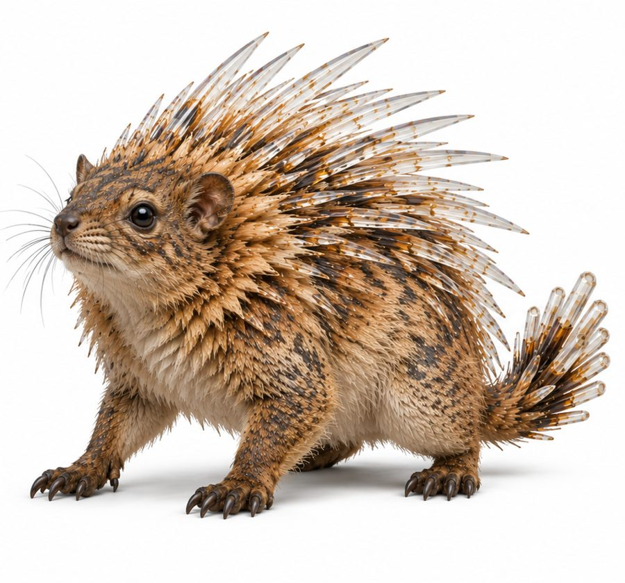
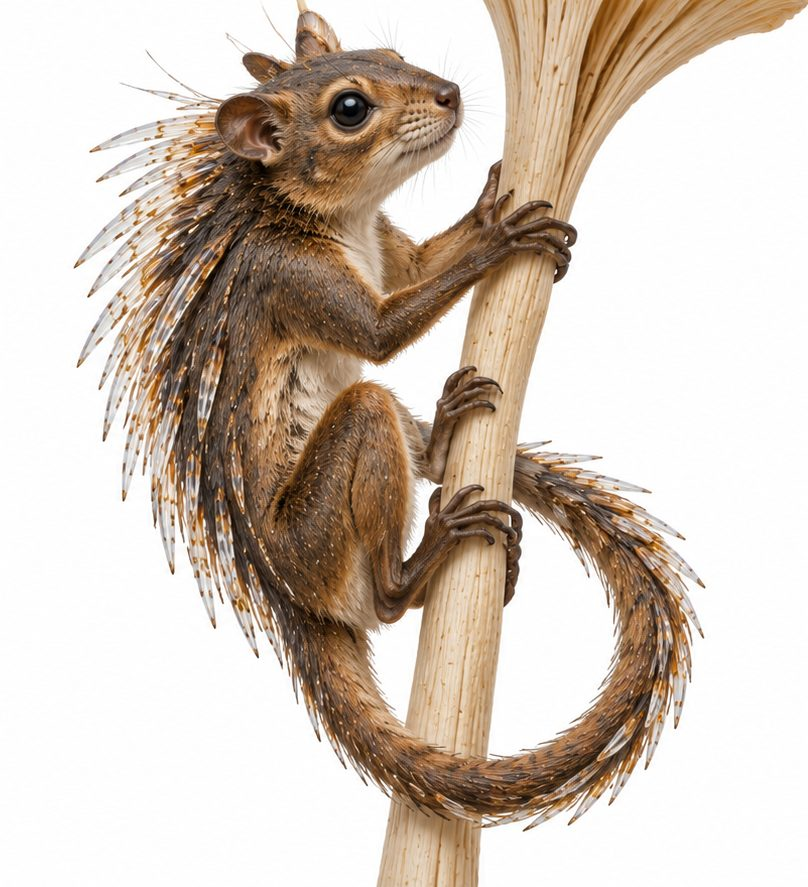
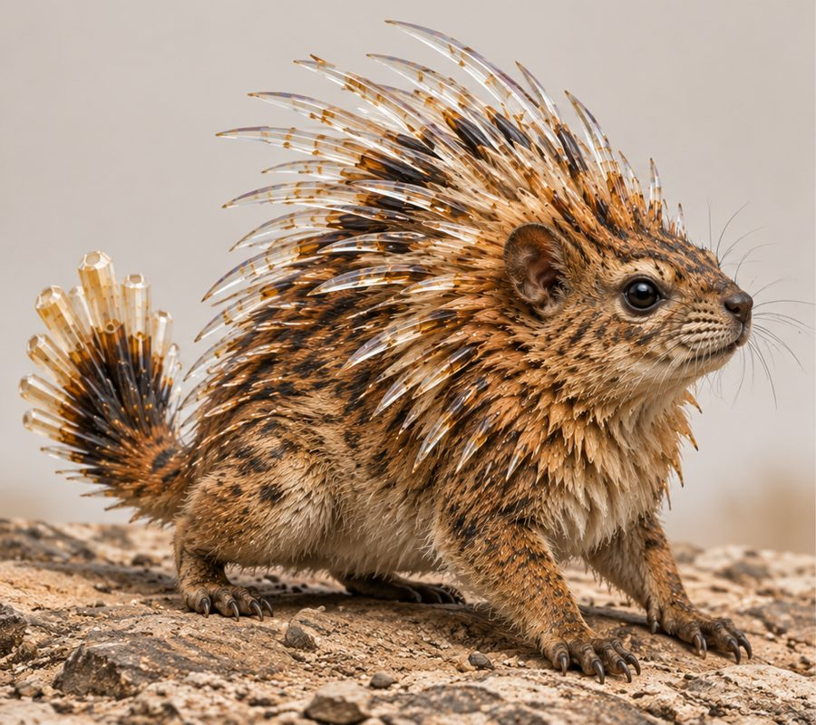
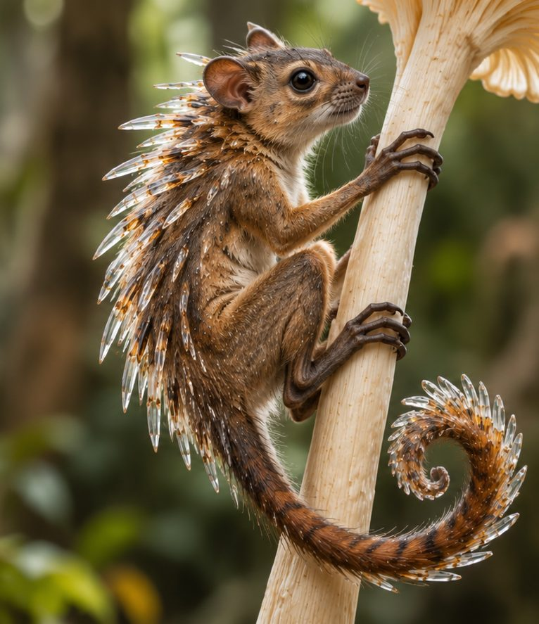

Qorazil
Rodent-sized animals with hollow crystalline quills that rattle faintly when they move.
- Group
- Underground and small animals
- Tags
- quills two types
- Size
- About the size of a mouse or a small rodent. Canon
- Quills
- Brittle and hollow, and they rattle faintly. The sound is a built-in alarm. Canon
- Hunted by
- Xathelun and Droneth. A noisy but rewarding hunt. Canon
Two types
| Type | Where | How it lives |
|---|---|---|
| Drona | The desert and open ground | Runs on the ground with a full spread of quills and a fan-like tail. |
| Booshle | The forests | A climber with a long curling tail, clinging to the stalks of giant fungi. |
Same animal, two ways of life. Decided
Uses
- The quills are worked into living fringe on clothing rather than sewn flat, so a walker chimes softly. Some families tune their quills on purpose. Others cultivate silence. Canon
- Paired quills strung around a hoop replace metal jingles on the Qorashil, the quill tambourine. Canon



